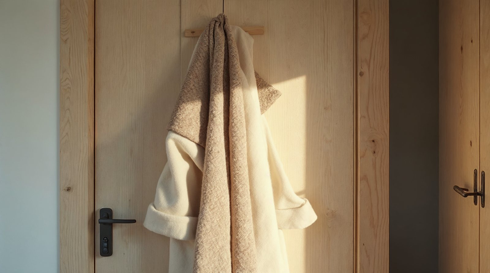
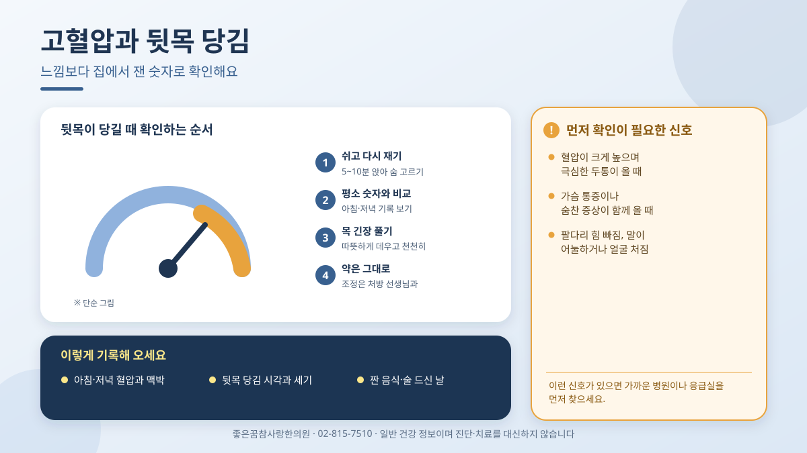

이종호 한의사 감수좋은꿈참사랑한의원 대표원장 (한의사 면허번호 19769)발행 2026-11-26 · 수정 2026-11-26
이 글의 차례
회의가 길어진 오후, 뒷목이 뻣뻣하게 굳어 오고 뒤통수가 묵직하게 눌립니다. 손으로 목덜미를 주무르다 덜컥 겁이 납니다. '혹시 혈압이 오른 건 아닐까. 아버지도 이렇게 뒷목을 잡으시다가 쓰러지셨는데.' 집에 와서 혈압계를 꺼내 보니 숫자가 평소보다 조금 높습니다.
뒷목이 당기면 혈압이 높다는 이야기는 우리에게 아주 익숙합니다. 드라마에서도 화가 난 인물이 뒷목을 잡고 쓰러지는 장면이 자주 나옵니다. 그래서 진료실에서도 "뒷목이 당기는데 혈압 때문인가요"라는 질문을 정말 많이 듣습니다.
그런데 실제로는 조금 다릅니다. 혈압이 높은 분들의 대부분은 아무 느낌이 없습니다. 반대로 뒷목이 당기고 머리가 아픈 분들의 상당수는 혈압과 상관없이 목과 어깨의 긴장, 잠 부족, 스트레스 때문인 경우가 많습니다. 둘이 함께 있을 때도 어느 쪽이 먼저인지 살펴볼 필요가 있습니다.
이 글에서는 고혈압과 두통, 뒷목 당김이 어떻게 이어져 있는지, 집에서 어떻게 구분해 볼 수 있는지, 그리고 생활에서 무엇을 함께 살필 수 있는지를 정리했습니다. 걱정을 조금 덜고, 해야 할 일을 분명히 하시는 데 도움이 되면 좋겠습니다.
고혈압이 있으면 머리가 아플까요
고혈압은 흔히 소리 없는 병이라고 부릅니다. 혈압이 꽤 높아도 대부분은 두통이나 뒷목 당김 같은 느낌이 없습니다. 그래서 건강검진에서 처음 알게 되는 분이 많고, 느낌이 없다는 이유로 관리를 미루시는 분도 많습니다.
물론 혈압이 아주 크게, 갑자기 오를 때는 두통이 함께 올 수 있습니다. 아침에 일어났을 때 뒤통수가 묵직하게 아프다는 분들 가운데 새벽 혈압이 높은 경우도 있습니다. 하지만 이런 경우는 생각보다 적고, 머리가 아프다고 혈압이 높다거나 머리가 안 아프다고 혈압이 괜찮다고 말할 수는 없습니다.
그래서 저는 "느낌으로 혈압을 짐작하지 마시고 숫자로 확인하세요"라고 말씀드립니다. 집에 혈압계를 두고 정해진 방법으로 재는 습관이 걱정을 줄이는 가장 확실한 길입니다.
왜 뒷목 당김과 혈압이 함께 떠오를까요
뒷목이 당기는 가장 흔한 까닭은 목과 어깨 근육의 긴장입니다. 오래 고개를 숙이고 화면을 보거나, 어깨에 힘을 주고 일하거나, 긴장과 스트레스가 이어지면 뒷목 근육이 굳고, 그 긴장이 뒤통수와 머리로 올라가 두통이 됩니다. 이것이 긴장성 두통의 흔한 모양입니다.
그런데 스트레스와 긴장은 혈압도 함께 올립니다. 화가 나거나 쫓기는 순간에는 몸이 긴장하며 혈압이 오르고, 동시에 뒷목 근육도 굳습니다. 그래서 뒷목이 당길 때 혈압을 재면 평소보다 조금 높게 나오는 일이 생깁니다. 이때 혈압이 뒷목을 당기게 한 것이 아니라, 같은 긴장이 둘을 함께 끌어올린 경우가 많습니다.
또 두통이 있으면 통증 자체가 몸을 긴장시켜 혈압을 잠시 올리기도 합니다. 머리가 아파서 혈압을 쟀더니 높게 나와 더 불안해지고, 불안이 다시 혈압과 뒷목 긴장을 올리는 고리가 생기기도 합니다.
집에서 어떻게 구분해 볼 수 있을까요
뒷목이 당기고 머리가 아플 때 혈압을 재 보는 것은 좋은 습관입니다. 다만 아픈 순간 한 번 잰 숫자만으로 판단하기보다는, 평소 아침과 저녁에 정해진 방법으로 잰 숫자와 비교해 보시는 것이 중요합니다.
평소 혈압이 안정적인데 뒷목이 당길 때만 조금 높게 나온다면, 긴장과 통증이 잠시 혈압을 올린 경우일 가능성이 큽니다. 이때는 5~10분 편하게 앉아 숨을 고른 뒤 다시 재 보세요. 숫자가 내려온다면 목과 어깨의 긴장을 먼저 살피는 쪽이 맞습니다.
반대로 평소 아침 혈압이 계속 높게 나온다면, 뒷목 당김과 별개로 혈압 자체를 관리해야 할 때입니다. 아직 진단을 받지 않으셨다면 1~2주의 기록을 들고 내과 진료를 받아 보시길 권합니다.
혈압을 정확하게 재는 방법
집에서 잴 때는 아침에 일어나 화장실을 다녀온 뒤, 약을 먹기 전, 등을 기대고 앉아 1~2분 쉬고 잽니다. 저녁에는 잠들기 전에 같은 방법으로 잽니다. 커피를 마시거나 담배를 피운 직후, 운동 직후, 목욕 직후에는 숫자가 높게 나올 수 있으니 피해 주세요.
팔에 맞는 크기의 커프를 쓰고, 팔은 탁자에 올려 심장 높이에 둡니다. 다리를 꼬지 않고 발은 바닥에 편하게 둡니다. 재는 동안에는 말을 하지 않습니다. 한 번에 두 번 재서 평균을 적어 두시면 더 정확합니다.
숫자 하나하나보다 일주일의 흐름을 보시길 권합니다. 하루 높게 나온 숫자에 마음을 쓰기보다, 일주일 동안 아침 숫자가 어떤 흐름인지가 처방한 선생님께도 저에게도 훨씬 쓸모 있는 정보입니다.
뒷목 당김을 키우는 하루
뒷목 당김을 호소하는 분들의 하루를 들여다보면 비슷한 흐름이 보입니다. 오래 앉아 고개를 숙이고 화면을 보고, 점심을 급하게 먹고, 오후에 커피를 여러 잔 마시고, 저녁에 늦게까지 휴대폰을 보다 잠드는 하루입니다.
이런 하루가 이어지면 목과 어깨는 쉴 틈 없이 긴장하고, 잠은 얕아지고, 다음 날 아침 뒷목이 더 무겁게 시작됩니다. 짠 음식과 술이 더해지면 혈압도 함께 흔들립니다. 그래서 뒷목 당김과 혈압은 같은 생활 위에서 함께 움직이는 경우가 많습니다.
이 흐름을 바꾸는 것은 거창하지 않습니다. 30~40분마다 고개를 들고 어깨를 크게 돌려 주고, 점심 뒤에 10분 걷고, 오후 커피를 한 잔 줄이고, 잠들기 전 화면을 멀리하는 것부터 시작하시면 됩니다.
혈압약을 드시는 분이라면
혈압약을 드시는데도 뒷목이 당기고 머리가 아프다면, 먼저 집 혈압 기록을 보시길 권합니다. 숫자가 잘 맞춰져 있다면 뒷목 당김은 혈압보다는 목과 어깨의 긴장, 잠, 스트레스 쪽에서 살펴보는 것이 맞습니다.
숫자가 자꾸 높게 나온다면 처방한 선생님께 기록을 보여 드리고 상의하세요. 약을 빠뜨린 날은 없는지, 진통제나 감기약을 여러 날 드시지 않았는지, 짠 음식이나 술이 늘지 않았는지도 함께 돌아보세요. 일부 진통제와 코막힘 약은 혈압에 영향을 줄 수 있습니다.
숫자가 좋아졌다고 혼자 약을 줄이거나 끊는 것은 권하지 않습니다. 약이 제 일을 하고 있어서 숫자가 맞는 것일 수 있기 때문입니다.
걱정이 뒷목을 더 굳게 만들 때
가족 가운데 뇌혈관 질환을 겪으신 분이 있으면 뒷목이 조금만 당겨도 마음이 덜컥 내려앉습니다. 그 걱정은 충분히 이해할 만한 것입니다. 하지만 걱정이 계속되면 몸은 늘 긴장한 상태로 지내게 되고, 그 긴장이 다시 뒷목을 굳게 만듭니다.
걱정을 줄이는 가장 좋은 방법은 확인입니다. 혈압 기록을 쌓고, 건강검진을 정기적으로 받고, 필요하면 내과 진료를 받아 지금 내 혈압이 어떤 상태인지 분명히 아는 것입니다. 막연한 불안이 구체적인 숫자로 바뀌면 마음이 훨씬 가벼워집니다.
걱정이 너무 커서 하루에도 몇 번씩 혈압을 재게 된다면, 재는 횟수를 아침과 저녁 두 번으로 정해 두시는 것도 도움이 됩니다.
아침 두통과 새벽 혈압
아침에 일어나자마자 뒤통수가 묵직하고 뒷목이 뻣뻣하다는 분이 많습니다. 이런 아침 두통에는 여러 까닭이 있습니다. 베개가 맞지 않아 목이 밤새 꺾여 있었을 수도 있고, 코골이나 수면 중 숨 멈춤으로 잠이 얕았을 수도 있고, 밤사이 이를 악물었을 수도 있습니다.
새벽에 혈압이 크게 오르는 분도 아침 두통을 겪을 수 있습니다. 이런 분은 아침에 일어나자마자 잰 혈압이 저녁보다 눈에 띄게 높게 나오는 경우가 많습니다. 아침 두통이 잦다면 1~2주 동안 아침 혈압을 꾸준히 재서 흐름을 확인해 보세요.
코골이가 심하고 자다가 숨이 멎는다는 말을 들으셨다면, 그 자체로 혈압과 아침 두통에 영향을 줄 수 있어 수면 검사를 받아 보시는 것도 방법입니다.

계절이 바뀔 때 함께 흔들립니다
겨울에는 찬 공기에 혈관이 움츠러들어 아침 혈압이 높게 나오기 쉽고, 추위에 어깨를 웅크리며 뒷목 근육도 함께 굳습니다. 그래서 겨울 아침에 뒷목 당김과 혈압 걱정이 함께 늘어나는 분이 많습니다.
추운 아침에는 이불 속에서 손발을 먼저 움직여 몸을 데운 뒤 천천히 일어나고, 바깥에 나갈 때는 목도리로 목을 감싸 주세요. 따뜻한 물을 한 잔 드시고 나가는 것도 좋습니다. 작은 습관이 아침의 뒷목과 혈압을 함께 편하게 해 줄 수 있습니다.
짠맛과 술, 뒷목과 혈압을 함께 흔듭니다
짠 국물과 젓갈, 라면을 즐기는 분들은 다음 날 아침 몸이 붓고 머리가 무겁다고 말씀하시는 경우가 많습니다. 짠 음식은 몸에 물을 붙잡아 혈압을 올리기 쉽고, 붓기와 무거움이 뒷목의 뻐근함과 함께 느껴지기도 합니다.
술도 비슷합니다. 마신 날 밤에는 잠이 얕아지고, 다음 날 아침에는 혈압이 오르고 뒷목이 뻣뻣해지기 쉽습니다. 짠 안주와 늦은 귀가까지 겹치면 그 흐름이 더 커집니다. 술은 마시는 날의 횟수부터 줄이시길 권합니다.
국물은 반 그릇만 드시고, 술자리가 있는 날은 물을 자주 드시며 일찍 자리를 정리하는 것부터 시작해 보세요. 작은 변화가 뒷목과 혈압 기록에 함께 나타나는 경우가 많습니다.
먼저 이렇게 여쭙니다
- 혈압 진단을 받으셨나요? 혈압약을 드시나요?
- 집에서 잰 아침과 저녁 혈압은 어느 정도인가요?
- 뒷목 당김과 두통은 하루 중 언제, 어떤 상황에서 심한가요?
- 두통은 머리의 어느 자리에서, 어떤 모양으로 오나요?
- 하루에 화면을 보는 시간과 자세는 어떠신가요?
- 잠, 긴장, 커피와 술은 어떠신가요?
- 가족 가운데 혈압이나 뇌혈관 질환을 앓으신 분이 있나요?
일상에서 먼저 해 볼 수 있는 것
- 아침과 저녁, 정해진 방법으로 혈압 재고 기록하기
- 30~40분마다 고개를 들고 어깨를 크게 돌리기
- 점심이나 저녁 뒤 10~20분 천천히 걷기
- 국물은 건더기 위주로, 짠 반찬은 조금씩 줄이기
- 오후 커피 한 잔 줄이고 따뜻한 물이나 차로 바꾸기
- 뒷목에 따뜻한 수건 올리고 숨을 길게 내쉬기
- 잠드는 시각을 일정하게 맞추기
뒷목을 너무 세게 주무르거나 목을 갑자기 꺾는 동작은 오히려 근육을 더 놀라게 할 수 있습니다. 따뜻하게 데운 뒤 천천히 고개를 숙이고 돌리는 정도로 부드럽게 풀어 주세요.
한의원에서 함께 살필 수 있는 경우
- 혈압은 맞춰져 있는데 뒷목이 늘 당기고 머리가 무거운 경우
- 긴장하거나 화가 나면 얼굴로 열이 오르고 뒷목이 뻣뻣해지는 경우
- 오래 앉아 일하며 목과 어깨가 굳고 두통이 잦은 경우
- 혈압 걱정 때문에 잠이 얕고 긴장이 이어지는 경우
- 뒷목 당김과 함께 어깨 결림, 눈의 피로가 있는 경우
좋은꿈참사랑한의원에서는 먼저 혈압을 재고 맥을 짚어 몸 전체의 상태를 살핍니다. 뒷목과 어깨는 직접 만져 보며 굳은 자리를 확인하고, 잠과 소화, 대소변, 손발 온도를 함께 여쭙습니다.
진찰한 내용을 바탕으로 침, 온열 관리, 한약 상담 가운데 지금 상태에 맞는 것을 정합니다. 한약을 상의할 때는 드시는 혈압약과 다른 약을 모두 확인하고 신중하게 정합니다. 혈압약은 처방한 선생님과 상의 없이 멈추지 않으셔야 합니다.
이렇게 기록해 오시면 상담이 쉬워집니다
- 아침과 저녁 혈압, 맥박(1~2주)
- 뒷목 당김과 두통이 있었던 시각과 세기(0~10)
- 그때 하던 일과 자세, 긴장했던 일
- 잠든 시각과 깬 시각
- 커피, 술, 짠 음식을 드신 날
기록을 나란히 놓고 보면 뒷목 당김이 혈압과 함께 움직이는지, 자세나 긴장과 함께 움직이는지가 보이기 시작합니다. 그것이 살필 방향을 정하는 실마리가 됩니다.
이런 증상은 먼저 확인이 필요합니다
- 혈압이 평소보다 크게 높으면서 지금까지 겪은 적 없는 심한 두통이나 가슴 통증, 숨찬 증상이 함께 오는 경우
- 갑자기 한쪽 팔다리에 힘이 빠지거나 말이 어눌해지고 얼굴 한쪽이 처지는 경우
이런 신호가 있으면 한의원보다 가까운 병원이나 응급실을 먼저 찾으세요.
함께 읽으면 좋은 글
- 고혈압 진단을 받았거나 경계라는 말을 들었다면 생활에서 무엇부터 살피나요?
- 고혈압 약을 먹고 있을 때 한의원 진료와 생활 관리는 어떻게 함께 살피나요?
- 스트레스를 받으면 뒷목이 당기고 머리가 아픈 긴장성 두통은 어떻게 살피나요?
- 손이 저리고 뒷목이 뻐근할 때 혹시 중풍 전조 증상일까 걱정된다면 무엇을 살피나요?
- 추운 아침마다 혈압이 높게 나올 때 집에서는 어떻게 재고 기록하나요?

여쭙는 것
- 혈압 진단을 받으셨나요? 혈압약을 드시나요?
- 집에서 잰 아침과 저녁 혈압은 어느 정도인가요?
- 뒷목 당김과 두통은 하루 중 언제, 어떤 상황에서 심한가요?
생활에서 해 볼 것
- 아침과 저녁, 정해진 방법으로 혈압 재고 기록하기
- 30~40분마다 고개를 들고 어깨를 크게 돌리기
- 점심이나 저녁 뒤 10~20분 천천히 걷기
한의원에서 함께 살필 것
- 혈압은 맞춰져 있는데 뒷목이 늘 당기고 머리가 무거운 경우
- 긴장하거나 화가 나면 얼굴로 열이 오르고 뒷목이 뻣뻣해지는 경우
- 오래 앉아 일하며 목과 어깨가 굳고 두통이 잦은 경우
먼저 확인이 필요한 신호
- 혈압이 평소보다 크게 높으면서 지금까지 겪은 적 없는 심한 두통이나 가슴 통증, 숨…
- 갑자기 한쪽 팔다리에 힘이 빠지거나 말이 어눌해지고 얼굴 한쪽이 처지는 경우
한눈에 보는 표
| 구분 | 핵심 |
|---|---|
| 여쭙는 것 | 혈압 진단을 받으셨나요? 혈압약을 드시나요? 집에서 잰 아침과 저녁 혈압은 어느 정도인가요? |
| 생활에서 해 볼 것 | 아침과 저녁, 정해진 방법으로 혈압 재고 기록하기 30~40분마다 고개를 들고 어깨를 크게 돌리기 |
| 한의원에서 함께 살필 것 | 혈압은 맞춰져 있는데 뒷목이 늘 당기고 머리가 무거운 경우 긴장하거나 화가 나면 얼굴로 열이 오르고 뒷목이 뻣뻣해지는 경우 |
| 먼저 확인이 필요한 신호 | 혈압이 평소보다 크게 높으면서 지금까지 겪은 적 없는 심한 두통이나 가슴 통증, 숨찬 증상이 함께 오는 경우 갑자기 한쪽 팔다리에 힘이 빠지거나 말이 어눌해지고 얼굴 한쪽이 처지는 경우 |
자주 묻는 질문
뒷목이 당기면 혈압이 높다는 뜻인가요?
그렇지 않은 경우가 더 많습니다. 뒷목 당김은 목과 어깨의 긴장, 잠 부족, 스트레스에서 오는 경우가 흔하고, 혈압이 높아도 대부분은 느낌이 없습니다. 느낌보다 집에서 잰 숫자로 확인하시길 권합니다.
머리가 아플 때 잰 혈압이 높게 나왔어요. 괜찮은 건가요?
통증과 긴장이 혈압을 잠시 올릴 수 있어서, 5~10분 편히 앉아 쉰 뒤 다시 재 보세요. 평소 아침 혈압이 계속 높게 나온다면 기록을 들고 내과 진료를 받아 보시길 권합니다.
혈압약을 먹는데 침 치료를 받아도 되나요?
드시는 약을 알려 주시면 그에 맞춰 진료 방향을 정합니다. 피를 묽게 하는 약을 함께 드신다면 처음에 꼭 말씀해 주세요.
뒷목을 세게 주무르면 혈압이 내려가나요?
주무른다고 혈압이 내려간다고 말씀드리기는 어렵고, 세게 누르면 근육이 더 놀랄 수 있습니다. 따뜻하게 데운 뒤 천천히 풀어 주시고, 혈압은 숫자로 따로 확인하세요.
좋은꿈참사랑한의원은 재진 때 지난번 이야기부터 이어서 여쭙니다. 진료시간과 예약은 오시는 길에서 확인하세요.
어디서 상담받을 수 있나요?
좋은꿈참사랑한의원은 서울 동작구 만양로2길 2 신성빌딩 3층·5층(서울 동작구 상도동, 7호선 상도역 3번 출구 근처)에 있습니다. 한의사 3명(이종호 대표원장, 조영기 수석진료원장, 정원영 진료원장)이 진료합니다. 진료시간은 평일 09:30~20:00(점심 13:00~14:00), 토·일·공휴일 09:30~15:00이며, 방문 전 전화로 확인을 권합니다. 예약은 네이버 예약, 카카오톡 상담, 전화 02-815-7510로 받습니다.
이 글은 일반적인 건강 정보이며 개인의 진단이나 치료를 대신하지 않습니다. 증상이 있거나 복용 중인 약이 있다면 진료를 통해 확인하세요. 치료 효과는 개인마다 다를 수 있습니다.
작성 기준: 일반적으로 알려져 있는 건강 정보를 참고해 정리했습니다(대표원장 감수). 증상 기록은 1~2주 동안 하루 1회, 비슷한 시간에 적어 오시면 지난 상태와 비교하기 쉽습니다.